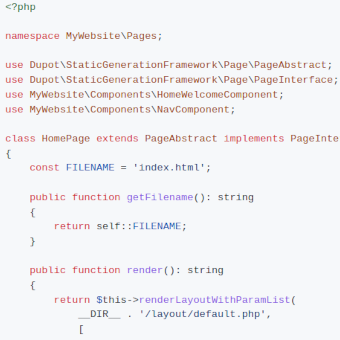

Propulse ce site
PHP
Composer
Dupot static-generation-framework
Générez des sites statiques en PHP pur : pas de moteur de template, pas de pipeline de build, zéro dépendance. Le framework qui propulse ce site !
Composer
$ composer require dupot/static-generation-framework